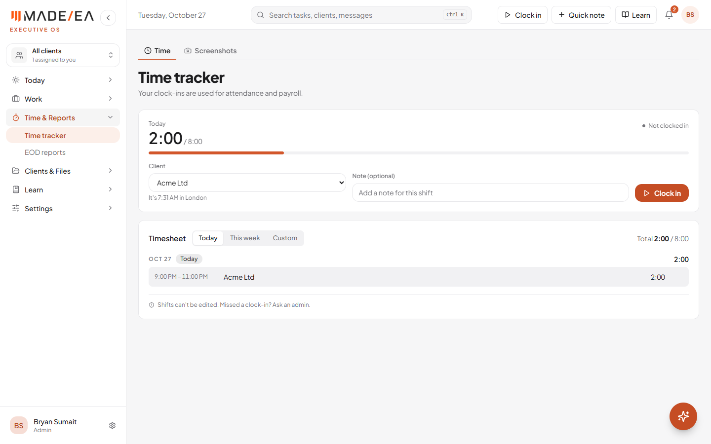
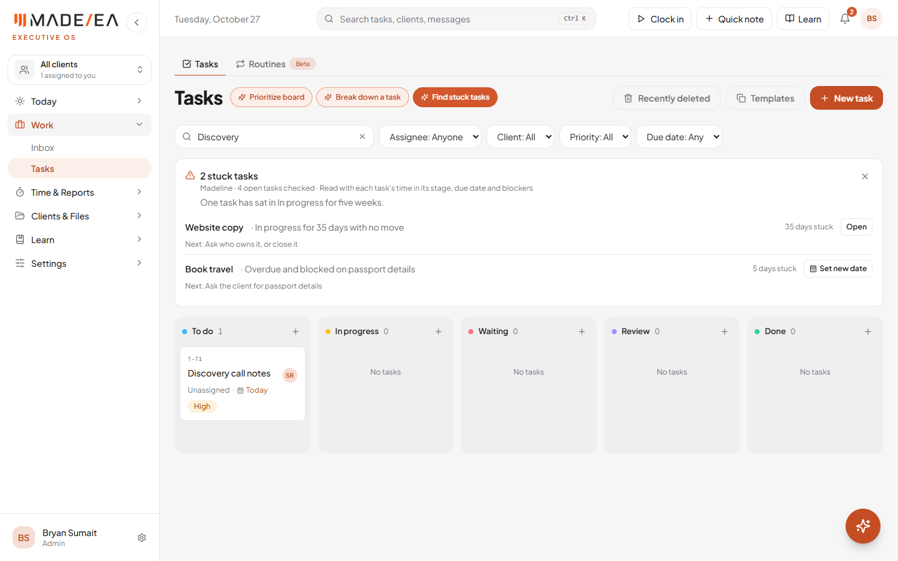

The new Meta lead form from yesterday's team meeting now sends every lead into its own follow-up: a confirmation if they booked a call, and a short series of reminders to book if they didn't. Andre is told about each new lead. In the Hub, the Time page now shows your own time zone, the AI reads the whole task board, and a new button finds stuck tasks.
| # | What was done | Status |
|---|---|---|
| 1 | The October 26 lead form, connected to its follow-up | Live, tested |
| 2 | The Time page follows your time zone setting | Live |
| 3 | Prioritize board reads every task | Live |
| 4 | Find stuck tasks with AI | Last step pending |
| 5 | The missing PostHog event details | Last step pending |
| 6 | Loose ends in the follow-up and coach | In progress |
The team meeting settled the form: five questions (their role, what they want in an EA, full name, email, phone), then an option to book a call. The automation's job is what happens next. A test lead from Meta went through every step below correctly.
The reminders stop as soon as the lead books, replies, opts out, or is tagged as booked, unqualified, do not contact or customer. The first text waits 10 minutes so someone booking straight from the form isn't asked to book while they're doing it.
The time zone setting added on 21 October changed the rest of the Hub but not the Time page, which still showed the computer's clock. Now clock-in times, pauses and the timesheet all show in the time zone you chose. When you pick a client, the page also shows the time where they are ("It's 7:31 AM in London"), and hovering over a shift shows its hours in the client's time.

Prioritize board only read the tasks visible on screen, so a search or filter quietly hid tasks from the AI. It now reads every open task for the client you're viewing, whatever the filters show. It's also told how long each task has sat in its current column, so a task that hasn't moved in weeks stands out.
"Find stuck tasks" used fixed rules (overdue, blocked, or untouched for a while). It now asks Madeline to read the board: how long each task has been in its column, its due date and anything blocking it. She returns a one-line summary, and for each stuck task the reason, a suggested next step, and a button to act on it: set a new date, nudge the person it's assigned to, or open the task.
If the AI can't be reached, the card falls back to the old rules and says so.

Yesterday's check found three events missing details the tracking plan asks for. They're added:
| Event | New detail |
|---|---|
| Task moved | How it was moved: dragged, from the menu, by the AI, or by an automation. "Days in stage" now counts from when the task entered that column, not from its last edit (a typo fix used to reset it). |
| EOD report submitted | How many items came from the prefilled draft, and how many of those were changed or removed. |
| Message sent | Whether the reply started from an AI draft. |
| Update | What went live |
|---|---|
| 2574aa2 | Time page in your time zone; Prioritize reads every task; Find stuck tasks with AI; PostHog event details |
| n8n | New follow-up for the October 26 lead form, with a booking confirmation |
| GHL | Lead form workflow: tag, pipeline opportunity, notification to Andre, start of the follow-up |